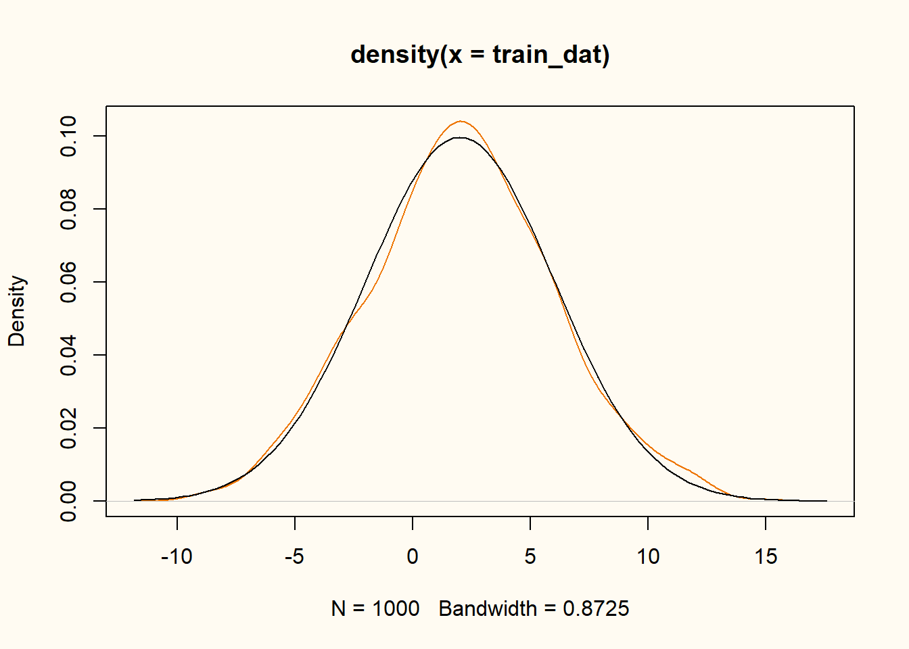
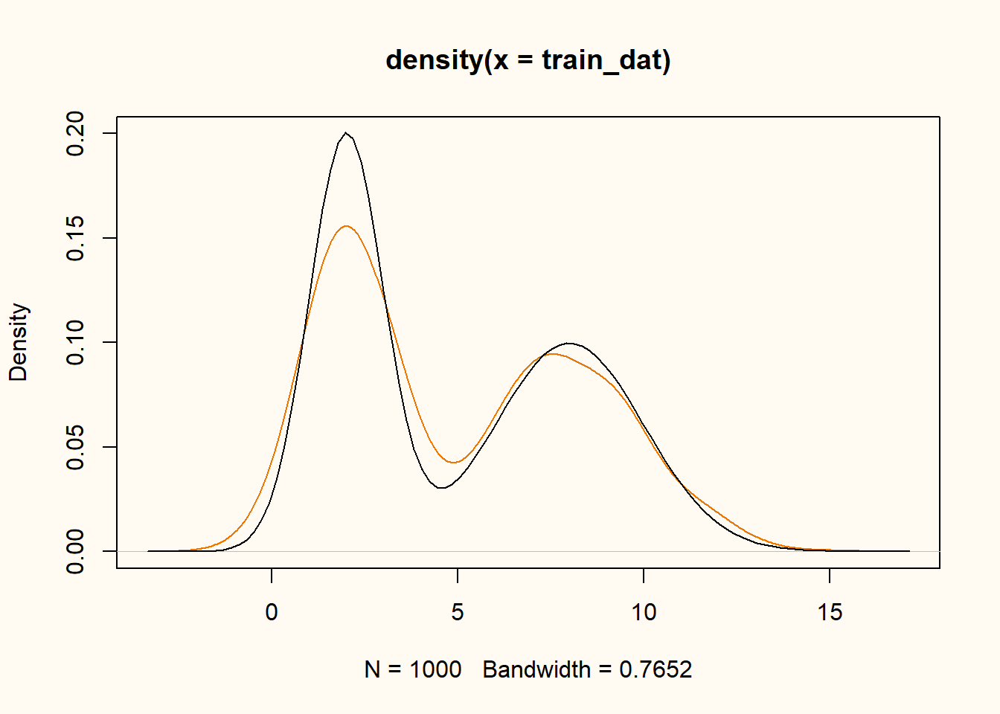
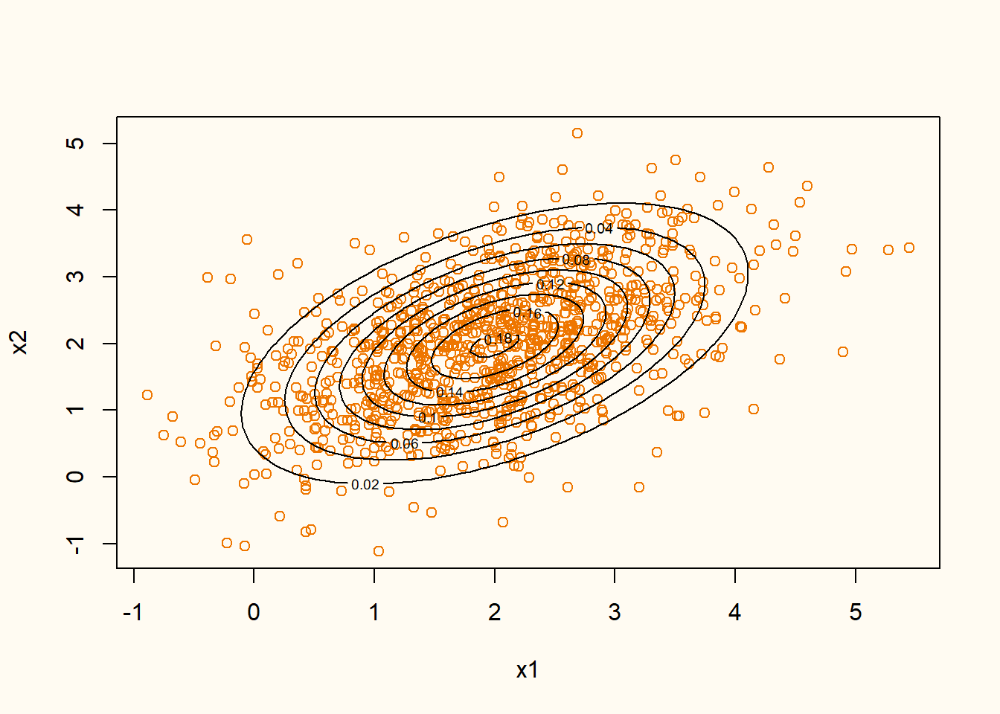

Generative adversarial networks (GANs) are a class of machine learning models that can be used to generate synthetic data. To do this, it transforms random noise into data that is similar to the training data. GANs consist of two neural networks: a generator and a discriminator. The generator takes random noise as input and transforms it into synthetic data, while the discriminator tries to distinguish between real and synthetic data. The two networks are trained simultaneously, in a zero-sum game: if the generator generates more realistic synthetic data, the discriminator has more difficulty distinguishing between the real and synthetic data.
Simple univariate GANs
Let’s create a GAN using keras and tensorflow in R. We will use a very simple dataset, consisting of only a single variable that is normally distributed with mean \(\mu = 2\) and standard deviation \(\sigma = 4\). The generator will be a simple linear model, and the discriminator will be a simple feedforward neural network with a single hidden layer. The GAN architecture is inspired by the book Deep Learning with R.
Preliminaries
First, we load the required packages and generate some training data that we want to synthesize. We generate \(n = 1000\) samples from a normal distribution with mean \(\mu = 2\) and standard deviation \(\sigma = 4\).
library(keras3)
library(tensorflow)
Attaching package: 'tensorflow'The following objects are masked from 'package:keras3':
set_random_seed, shapeset.seed(123)
set_random_seed(123)
N <- 1000
train_dat <- matrix(rnorm(N, 2, 4))
plot(density(train_dat), col = "darkorange2")
curve(dnorm(x, 2, 4), add = TRUE)

A very simple GAN
To generate synthetic data, we define a very simple GAN, using a generator that is a simple linear model, and a discriminator that is a model equivalent to a logistic regression model. We define the generator and discriminator as functions that return the respective models. We then define the GAN as a new model class.
Generator
The generator consists of only an output layer with a single unit and a linear activation function.
generator <- function(latent_dim = 1) {
model <- keras_model_sequential(input_shape = latent_dim, name = "seq_gen") |>
layer_dense(units = 1, activation = "linear")
}
summary(generator())Model: "seq_gen"
┌───────────────────────────────────┬──────────────────────────┬───────────────
│ Layer (type) │ Output Shape │ Param #
├───────────────────────────────────┼──────────────────────────┼───────────────
│ dense (Dense) │ (None, 1) │ 2
└───────────────────────────────────┴──────────────────────────┴───────────────
Total params: 2 (8.00 B)
Trainable params: 2 (8.00 B)
Non-trainable params: 0 (0.00 B)Discriminator
The discriminator consists of a single hidden layer with 8 units and rectified linear activation function, and an output layer with a single unit and a sigmoid activation function.
discriminator <- function(dim = 1) {
model <- keras_model_sequential(input_shape = dim, name = "seq_disc") |>
layer_dense(units = 8, activation = "relu") |>
layer_dense(units = 1, activation = "sigmoid")
}
summary(discriminator())Model: "seq_disc"
┌───────────────────────────────────┬──────────────────────────┬───────────────
│ Layer (type) │ Output Shape │ Param #
├───────────────────────────────────┼──────────────────────────┼───────────────
│ dense_1 (Dense) │ (None, 8) │ 16
├───────────────────────────────────┼──────────────────────────┼───────────────
│ dense_2 (Dense) │ (None, 1) │ 9
└───────────────────────────────────┴──────────────────────────┴───────────────
Total params: 25 (100.00 B)
Trainable params: 25 (100.00 B)
Non-trainable params: 0 (0.00 B)Defining a GAN model class
Now we have everything in place, we can define a new model class which collects the generator, discriminator and additional hyperparameters. We also define the training step for the GAN.
gan <- new_model_class(
classname = "GAN",
# initialize model with generator, discriminator, dimension
# of the random latent vectors (i.e., the input that is
# transformed by the generator to yield useful synthetic
# data).
initialize = function(discriminator, generator, latent_dim) {
super$initialize()
self$discriminator <- discriminator
self$generator <- generator
self$latent_dim <- latent_dim
self$d_loss_metric <- metric_mean(name = "d_loss")
self$g_loss_metric <- metric_mean(name = "g_loss")
},
# create compile function that sets the optimizers and loss
compile = function(d_optimizer, g_optimizer, loss_fn) {
super$compile()
self$d_optimizer <- d_optimizer
self$g_optimizer <- g_optimizer
self$loss_fn <- loss_fn
},
# plot generator and discriminator loss during training
metrics = mark_active(function() {
list(self$d_loss_metric, self$g_loss_metric)
}),
# define the training step, set batch size, create random normal variates
# as input for the generator, stack real and generated data, create labels
# for the discriminator, add some noise to the labels to prevent overfitting,
# compute discriminator loss, compute gradients, apply gradients to the
# discriminator.
train_step = function(real_data) {
batch_size <- tf$shape(real_data)[1]
random_latent_vectors <- tf$random$normal(shape = c(batch_size, self$latent_dim))
generated_data <- self$generator(random_latent_vectors)
combined_data <- tf$concat(list(generated_data, real_data), axis = 0L)
labels <- tf$concat(list(tf$ones(tuple(batch_size, 1L)),
tf$zeros(tuple(batch_size, 1L))), axis = 0L)
labels <- labels + tf$random$uniform(tf$shape(labels), maxval = 0.01)
with(tf$GradientTape() %as% tape, {
predictions <- self$discriminator(combined_data)
d_loss <- self$loss_fn(labels, predictions)
})
grads <- tape$gradient(d_loss, self$discriminator$trainable_weights)
self$d_optimizer$apply_gradients(
zip_lists(grads, self$discriminator$trainable_weights)
)
# Then sample new random points in latent space, and create labels as if all
# these new samples were real so that only the generator is trained, and not
# the discriminator. Then the generator loss is computed, and the generator
# weights are updated.
random_latent_vectors <- tf$random$normal(shape = c(batch_size, self$latent_dim))
misleading_labels <- tf$zeros(tuple(batch_size, 1L))
with(tf$GradientTape() %as% tape, {
predictions <- random_latent_vectors |>
self$generator() |>
self$discriminator()
g_loss <- self$loss_fn(misleading_labels, predictions)
})
grads <- tape$gradient(g_loss, self$generator$trainable_weights)
self$g_optimizer$apply_gradients(
zip_lists(grads, self$generator$trainable_weights)
)
self$d_loss_metric$update_state(d_loss)
self$g_loss_metric$update_state(g_loss)
list(d_loss = self$d_loss_metric$result(),
g_loss = self$g_loss_metric$result())
}
)Training the GAN
We assemble all pieces and train the GAN. We use a simple standard normal distribution \(\mathcal{N}(0, 1)\) as the latent input data for the generator. We first train the GAN for 250 epochs, and store the result after every twentieth epoch.
latent_dim <- as.integer(1)
nsyn <- nrow(train_dat)
mod <- gan(
discriminator = discriminator(dim = ncol(train_dat)),
generator = generator(latent_dim = latent_dim),
latent_dim = latent_dim
)
mod |>
compile(
d_optimizer = optimizer_adam(beta_1 = 0.5),
g_optimizer = optimizer_adam(beta_1 = 0.5),
loss_fn = loss_binary_crossentropy()
)
plot(
density(train_dat),
ylim = c(0, 0.2),
xlim = c(-12, 16),
col = "darkorange2",
xlab = "x",
main = "GAN Training"
)
curve(dnorm(x, 2, 4), add = TRUE)
curve(dnorm(x, 0, 1), add = TRUE, col = "black", lty=2)
for (i in 1:5) {
mod |>
fit(train_dat, epochs = 30, batch_size = 32, verbose = 0)
newdat <- mod$generator(tf$random$normal(shape = c(nsyn, latent_dim)))
lines(density(as.matrix(newdat)),
col = RColorBrewer::brewer.pal(7, "Greens")[i])
}
Figure 3 shows the density of the training data (orange), the true data generating distribution (black line), the distribution of the random input vectors (black dashed line), and the density of the generated data after 30, 60, 90, 120 and 150 epochs of training (green lines). The generator comes increasingly close to the true data generating distribution.
A normal mixture GAN
In this example, we will use a more complex data generating distribution. We will use a mixture of two normal distributions with means \(\mu_1 = 2\) and \(\mu_2 = 8\), and standard deviations \(\sigma_1 = 1\) and \(\sigma_2 = 2\). The data generating distribution is then given by \[ f(x) = 0.5 \cdot \mathcal{N}(x; 2, 1) + 0.5 \cdot \mathcal{N}(x; 8, 2). \]
mixture <- rbinom(N, 1, 0.5)
train_dat <- matrix(mixture * rnorm(N, 2, 1) + (1 - mixture) * rnorm(N, 8, 2))
plot(density(train_dat), ylim = c(0, 0.2), col = "darkorange2")
curve(0.5 * dnorm(x, 2, 1) + 0.5 * dnorm(x, 8, 2), add = TRUE)

We can now train the GAN on this data generating distribution. We slightly change the generator and discriminator architectures to allow for a more complex data generating distribution. We also increase the number of epochs to 500.
generator <- function(latent_dim = 1) {
model <- keras_model_sequential(input_shape = latent_dim, name = "seq_gen") |>
layer_dense(units = 16, activation = "relu") |>
layer_dense(units = 1, activation = "linear")
}
summary(generator())Model: "seq_gen"
┌───────────────────────────────────┬──────────────────────────┬───────────────
│ Layer (type) │ Output Shape │ Param #
├───────────────────────────────────┼──────────────────────────┼───────────────
│ dense_6 (Dense) │ (None, 16) │ 32
├───────────────────────────────────┼──────────────────────────┼───────────────
│ dense_7 (Dense) │ (None, 1) │ 17
└───────────────────────────────────┴──────────────────────────┴───────────────
Total params: 49 (196.00 B)
Trainable params: 49 (196.00 B)
Non-trainable params: 0 (0.00 B)The generator now has a single hidden layer with 16 units and rectified linear activation function, and a single output layer with linear activation function.
discriminator <- function(dim = 1) {
model <- keras_model_sequential(input_shape = dim, name = "seq_disc") |>
layer_dense(units = 32, activation = "relu") |>
layer_dense(units = 16, activation = "relu") |>
layer_dense(units = 1, activation = "sigmoid")
}
summary(discriminator())Model: "seq_disc"
┌───────────────────────────────────┬──────────────────────────┬───────────────
│ Layer (type) │ Output Shape │ Param #
├───────────────────────────────────┼──────────────────────────┼───────────────
│ dense_8 (Dense) │ (None, 32) │ 64
├───────────────────────────────────┼──────────────────────────┼───────────────
│ dense_9 (Dense) │ (None, 16) │ 528
├───────────────────────────────────┼──────────────────────────┼───────────────
│ dense_10 (Dense) │ (None, 1) │ 17
└───────────────────────────────────┴──────────────────────────┴───────────────
Total params: 609 (2.38 KB)
Trainable params: 609 (2.38 KB)
Non-trainable params: 0 (0.00 B)The discriminator has two hidden layers with 32 and 16 units, respectively, and rectified linear activation functions. The output layer has a single unit and a sigmoid activation function.
latent_dim <- as.integer(1)
nsyn <- nrow(train_dat)
mod <- gan(
discriminator = discriminator(dim = ncol(train_dat)),
generator = generator(latent_dim = latent_dim),
latent_dim = latent_dim
)
mod |>
compile(
d_optimizer = optimizer_adam(beta_1 = 0.5),
g_optimizer = optimizer_adam(beta_1 = 0.5),
loss_fn = loss_binary_crossentropy()
)
plot(
density(train_dat),
ylim = c(0, 0.2),
col = "darkorange2",
xlab = "x",
main = "GAN Training"
)
curve(0.5 * dnorm(x, 2, 1) + 0.5 * dnorm(x, 8, 2), add = TRUE)
for (i in 1:5) {
mod |>
fit(train_dat, epochs = 100, batch_size = 32, verbose = 0)
newdat <- mod$generator(tf$random$normal(shape = c(nsyn, latent_dim)))
lines(density(as.matrix(newdat)),
col = RColorBrewer::brewer.pal(6, "Greens")[i])
}
We still use only a single random latent dimension, and train the model for 100, 200, 300, 400 and 500 epochs with a batch size of 32. Figure 5 shows the true data generating distribution (black dashed line) and the density of the training data (orange) and the generated data (darker green denotes later epochs). The generator comes increasingly close to the true data generating distribution.
Conclusion
In the first section, we illustrated some very basic GANs and showed how these can be used to generate synthetic univariate data. The illustrations showed that as the complexity of the data increases, the GANs need to be more complex to capture the data generating distribution. In the next section, we will illustrate how GANs can be used to generate multivariate data.
GANs for multivariate data
For the multivariate case, the general set-up remains pretty similar. We still need a generator and a discriminator, but we make some changes to the architecture of these models.
Modeleling a bivariate normal distribution
We start this section by modeling a bivariate normal distribution. The data generating distribution is given by \[ f(x_1, x_2) = \mathcal{N}((x_1, x_2); (2, 2), \begin{pmatrix} 1 & 0.5 \\ 0.5 & 1 \end{pmatrix}). \]
P <- 2
mu <- c(2,2)
Sigma <- matrix(c(1, 0.5, 0.5, 1), nrow = 2)
train_dat <- rnorm(N*P) |>
matrix(N) %*%
chol(Sigma) + rep(mu, each = N)
plot(train_dat, col = "darkorange2", xlab = "x1", ylab = "x2")
contour(
x = seq(-2, 6, length = 100),
y = seq(-2, 6, length = 100),
z = matrix(mvtnorm::dmvnorm(expand.grid(x = seq(-2, 6, length = 100),
y = seq(-2, 6, length = 100)),
mu, Sigma), nrow = 100),
add = TRUE
)

Figure 6 shows the contour line of true data generating distribution (black lines) and the realized training data (orange points). We can now train a GAN on this data generating distribution. We start by defining the generator and discriminator architectures.
generator <- function(latent_dim = 1) {
model <- keras_model_sequential(input_shape = latent_dim, name = "seq_gen") |>
layer_dense(units = 2, activation = "linear")
}
generator() |> summary()Model: "seq_gen"
┌───────────────────────────────────┬──────────────────────────┬───────────────
│ Layer (type) │ Output Shape │ Param #
├───────────────────────────────────┼──────────────────────────┼───────────────
│ dense_16 (Dense) │ (None, 2) │ 4
└───────────────────────────────────┴──────────────────────────┴───────────────
Total params: 4 (16.00 B)
Trainable params: 4 (16.00 B)
Non-trainable params: 0 (0.00 B)The generator has a single hidden layer with 16 units and rectified linear activation function, and an output layer with two units and linear activation function.
discriminator <- function(dim = 2) {
model <- keras_model_sequential(input_shape = dim, name = "seq_disc") |>
layer_dense(units = 64, activation = "relu") |>
layer_dense(units = 1, activation = "sigmoid")
}
discriminator() |> summary()Model: "seq_disc"
┌───────────────────────────────────┬──────────────────────────┬───────────────
│ Layer (type) │ Output Shape │ Param #
├───────────────────────────────────┼──────────────────────────┼───────────────
│ dense_17 (Dense) │ (None, 64) │ 192
├───────────────────────────────────┼──────────────────────────┼───────────────
│ dense_18 (Dense) │ (None, 1) │ 65
└───────────────────────────────────┴──────────────────────────┴───────────────
Total params: 257 (1.00 KB)
Trainable params: 257 (1.00 KB)
Non-trainable params: 0 (0.00 B)The discriminator has two hidden layers with 32 and 16 units, respectively, and rectified linear activation functions. The output layer has a single unit and a sigmoid activation function.
latent_dim <- as.integer(2)
nsyn <- nrow(train_dat)
mod <- gan(
discriminator = discriminator(dim = ncol(train_dat)),
generator = generator(latent_dim = latent_dim),
latent_dim = latent_dim
)
mod |>
compile(
d_optimizer = optimizer_rmsprop(),
g_optimizer = optimizer_rmsprop(),
loss_fn = loss_binary_crossentropy()
)
par(mfrow = c(1, 2))
for (i in 1:2) {
mod |> fit(train_dat, epochs = i * 100, batch_size = 32, verbose = 0)
newdat <- as.matrix(mod$generator(tf$random$normal(shape = c(nsyn, latent_dim))))
plot(train_dat, col = "darkorange2", xlab = "x1", ylab = "x2")
points(newdat, col = "darkgreen", pch = 2)
contour(
x = seq(-2, 6, length = 100),
y = seq(-2, 6, length = 100),
z = matrix(mvtnorm::dmvnorm(expand.grid(x = seq(-2, 6, length = 100),
y = seq(-2, 6, length = 100)),
mu, Sigma), nrow = 100),
add = TRUE
)
}
colMeans(train_dat)[1] 1.978727 1.989606colMeans(newdat)[1] 1.991835 1.963058var(train_dat) [,1] [,2]
[1,] 0.9975325 0.5019249
[2,] 0.5019249 0.9751667var(newdat) [,1] [,2]
[1,] 0.9464911 0.3714645
[2,] 0.3714645 0.9200072When inspecting the estimates, it can be seen that the means are estimated quite well, whereas the variances and covariances are somewhat underestimated (especially the covariances). However, when inspecting the contour lines of the true data generating distribution and the generated data (Figure 7), it can be seen that the generated data is quite close to the true data generating distribution.
contour(
x = seq(-2, 6, length = 100),
y = seq(-2, 6, length = 100),
z = matrix(mvtnorm::dmvnorm(expand.grid(x = seq(-2, 6, length = 100),
y = seq(-2, 6, length = 100)),
mu, Sigma), nrow = 100)
)
contour(
x = seq(-2, 6, length = 100),
y = seq(-2, 6, length = 100),
z = matrix(mvtnorm::dmvnorm(expand.grid(x = seq(-2, 6, length = 100),
y = seq(-2, 6, length = 100)),
colMeans(newdat), var(newdat)), nrow = 100),
col = "darkgreen", add = TRUE
)
Figure 8 shows the training data (orange points), the generated data (green points), and the contour lines of the true data generating distribution (black contour lines). The figure shows that there is quite some overlap between the observed and synthetic data.
Modeling a sin function
Now we turn to a slightly more complex data generating distribution, in the sense that one of the variables comes from a univariate normal distribution, and the other variable follows a sine function of the first variable with some additive noise. The data generating distribution is given by \[ f(x_1, x_2) = \mathcal{N}(x_1; 2, 2) \times \mathcal{N}(x_2; \sin(2x_1), 0.1). \]
x1 <- rnorm(N, 2, 2)
x2 <- rnorm(N, sin(2*x1), 0.1)
plot(x1, x2, col = "darkorange2")
curve(sin(2*x), add = TRUE)
Figure 9 shows the realized training data (orange points) and the conditional expectation \(\mathbb{E}(x_2|x_1)\) true data generating distribution (black line). We can now train a GAN on this data generating distribution. We start by defining the generator and discriminator architectures.
generator <- function(latent_dim = 1) {
model <- keras_model_sequential(input_shape = latent_dim, name = "seq_gen") |>
layer_dense(units = 8, activation = "relu") |>
layer_dense(units = 16, activation = "relu") |>
layer_dense(units = 32, activation = "relu") |>
layer_dense(units = 64, activation = "relu") |>
layer_dense(units = 2, activation = "linear")
}
summary(generator())Model: "seq_gen"
┌───────────────────────────────────┬──────────────────────────┬───────────────
│ Layer (type) │ Output Shape │ Param #
├───────────────────────────────────┼──────────────────────────┼───────────────
│ dense_22 (Dense) │ (None, 8) │ 16
├───────────────────────────────────┼──────────────────────────┼───────────────
│ dense_23 (Dense) │ (None, 16) │ 144
├───────────────────────────────────┼──────────────────────────┼───────────────
│ dense_24 (Dense) │ (None, 32) │ 544
├───────────────────────────────────┼──────────────────────────┼───────────────
│ dense_25 (Dense) │ (None, 64) │ 2,112
├───────────────────────────────────┼──────────────────────────┼───────────────
│ dense_26 (Dense) │ (None, 2) │ 130
└───────────────────────────────────┴──────────────────────────┴───────────────
Total params: 2,946 (11.51 KB)
Trainable params: 2,946 (11.51 KB)
Non-trainable params: 0 (0.00 B)The generator has a single hidden layer with 16 units and rectified linear activation function, and an output layer with two units and linear activation function.
discriminator <- function(dim = 2) {
model <- keras_model_sequential(input_shape = dim, name = "seq_disc") |>
layer_dense(units = 64, activation = "relu") |>
layer_dense(units = 32, activation = "relu") |>
layer_dense(units = 16, activation = "relu") |>
layer_dense(units = 1, activation = "sigmoid")
}
summary(discriminator())Model: "seq_disc"
┌───────────────────────────────────┬──────────────────────────┬───────────────
│ Layer (type) │ Output Shape │ Param #
├───────────────────────────────────┼──────────────────────────┼───────────────
│ dense_27 (Dense) │ (None, 64) │ 192
├───────────────────────────────────┼──────────────────────────┼───────────────
│ dense_28 (Dense) │ (None, 32) │ 2,080
├───────────────────────────────────┼──────────────────────────┼───────────────
│ dense_29 (Dense) │ (None, 16) │ 528
├───────────────────────────────────┼──────────────────────────┼───────────────
│ dense_30 (Dense) │ (None, 1) │ 17
└───────────────────────────────────┴──────────────────────────┴───────────────
Total params: 2,817 (11.00 KB)
Trainable params: 2,817 (11.00 KB)
Non-trainable params: 0 (0.00 B)The discriminator has two hidden layers with 32 and 16 units, respectively, and rectified linear activation functions. The output layer has a single unit and a sigmoid activation function.
train_dat <- cbind(x1, x2)
latent_dim <- as.integer(2)
nsyn <- nrow(train_dat)
mod <- gan(
discriminator = discriminator(dim = ncol(train_dat)),
generator = generator(latent_dim = latent_dim),
latent_dim = latent_dim
)
mod |>
compile(
d_optimizer = optimizer_rmsprop(),
g_optimizer = optimizer_rmsprop(),
loss_fn = loss_binary_focal_crossentropy()
)
par(mfrow = c(2, 2))
for (i in 1:4) {
mod |> fit(train_dat, epochs = i^2*100, batch_size = 32, verbose = 0)
newdat <- as.matrix(mod$generator(tf$random$normal(shape = c(nsyn, latent_dim))))
plot(train_dat, col = "darkorange2", xlab = "x1", ylab = "x2")
points(newdat, col = "darkgreen", pch = 2)
curve(sin(2*x), add = TRUE)
}
Figure 10 shows the training data (orange points) and a realization of the synthetic data model after 100, 500, 900, and 2500 epochs (green points), including the conditional expectation of \(x_2\) given \(x_1\). The figure shows that the model slowly converges towards the real data distribution, although there seems to be some bias in some areas of the distribution. Also, the variance seems to be slightly underestimated in the synthetic data. Nevertheless, without providing any information about the true model, the synthetic data distribution is quite close to the true data generating distribution.
Conclusion
The examples shown here reveal that it is rather easy to construct a GAN to create synthetic data in R. However, without proper specifications of the hyperparameters, the quality of the synthetic data will be poor. Moreover, the examples show that the quality of the synthetic data can be substantially improved still. One might consider more advanced architectures of the generator or discriminator, changing the optimizer or loss function, or increasing the number of epochs. In any case, training a GAN to yield high-quality synthetic data is a non-trivial task that requires a lot of experimentation and tuning. Nevertheless, the examples show that GANs can be a powerful tool to create synthetic data that can be used for various purposes, such as data augmentation, privacy-preserving data sharing, or testing new algorithms on simulated data.
Reuse
Citation
```{bib}
@online{
author = {Volker, Thom Benjamin},
title = {Illustrative GANs for simple synthetic data with keras in R},
date = {2025-07-14},
url = {https://thomvolker.github.io/blog/1407_gans_in_r/}
}
```For attribution, please cite this blogpost as:
Volker, T. B. (2025). Illustrative GANs for simple synthetic data with keras in R. Obtained from https://thomvolker.github.io/blog/1407_gans_in_r/